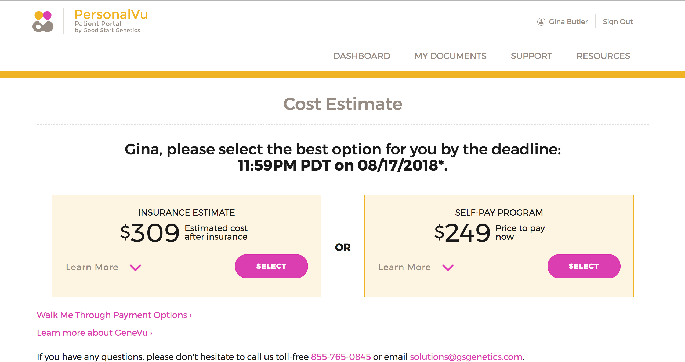
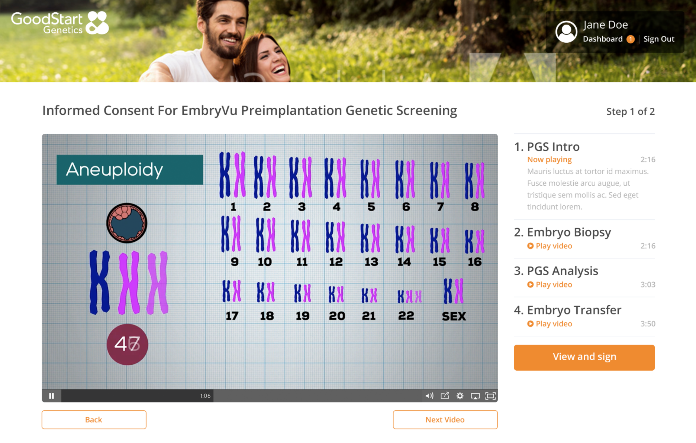
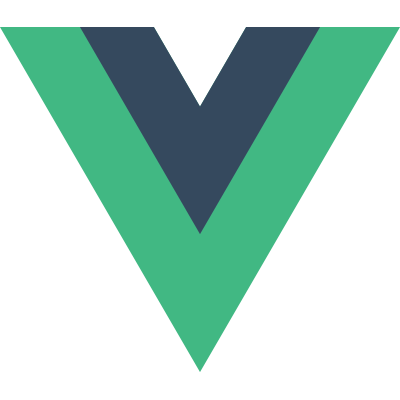
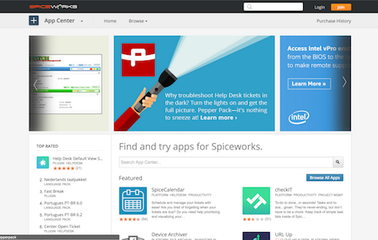
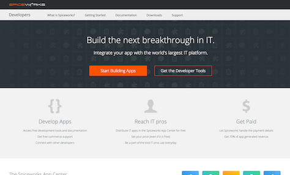
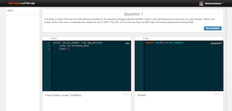
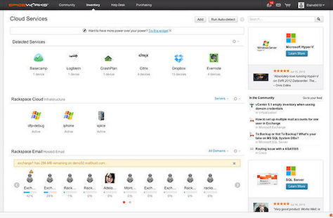
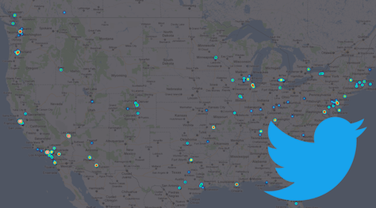
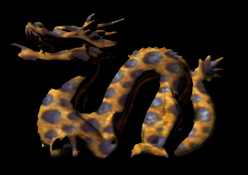
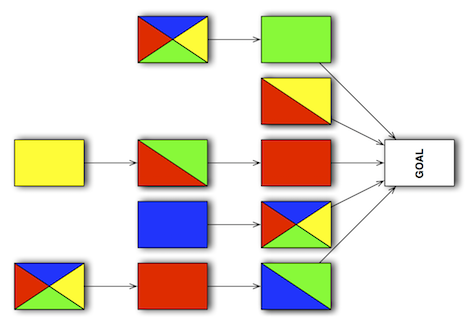

Experience
Good Start Genetics
Cambridge, MA
-
Lead Software Engineer
2016 - PresentI lead a team of developers, QA engineers, and a designer responsible for building all of our externally facing applications, including our patient portal, physician portal, product pages, and company website. I work with internal and external stakeholders to develop new product features, help architect their development, and lead our Scrum team in their execution. In my 9 months at Good Start we have already launched 5 major new features, including our Flip to Cash billing program, which has directly led to over $2M in revenue.
Spiceworks
Austin, TX
-
Technical Product Manager & Staff Developer
2015 - 2016Worked as full-stack product creator at Spiceworks, responsible for researching, conceptualizing, and leading the development and growth of new products. This meant speaking to IT pros to find their pain points, coming up with creative solutions, working with development teams to build those solutions, and then getting those solutions to users. I was a Lead Developer and then the Product Manager for the Cloud Cost Monitor, which helps IT pros track their cloud spending.
-
Senior Software Developer
2013 - 2015Tasked with designing and developing an extensible platform for our flagship Desktop app, I formulated our approach and the architecture that would become the Spiceworks App Center and the Spiceworks Developer Tools. I hired and led a team to build it and we grew it to dozens of developers and tens of thousands of app downloads.
I helped grow the larger Spiceworks development team, finding the best talent by attending conferences, giving campus tech talks, and conducting hundreds of developer interviews.
-
Software Developer
2011 - 2013From zero web-development experience, in less than 2 years I was leading a development team of 5 building out the strategic Cloud Services management tool in our flagship application. I also lobbied the CEO to start our first company hack-week, which is now in it's 7th year and was featured in the WSJ.
University of Texas
Austin, TX
-
Graduate Research Assistant
2009 - 2011I researched theoretical cryptography under Prof. Brent Waters, helping to develop new techniques for proving the security of digital signature schemes, published in ASIACRYPT 2012. We also did a fun, applied project implementing an attack on the SCiFI secure face identification system, which was published in WACV 2013. See all my publications.
Projects
-

Flip to Cash Billing Program
Lead Developer & Product Manager, Good Start Genetics 2016-2017- Developed and led Scrum team to build and launch new billing solution in first 3 months at Good Start
- Architected scalable infrastructure for doing benefit invesitgations and accepting payments
- Worked with finanace, client services, sales and external vendor teams to understand complex requirements for insurance and self pay billing process
- Trained sales and client services team on new billing solution
- Organized pilot launch and collected feedback from select clinics
- Created OKRs and analytics strategy to track product success
- Collected $2M+ and counting in online payments through Stripe
Tools: Stripe, Groovy, Grails, PostgreSQL, ActiveMQ, VueJS, HTML, CSS, Mirth Connect, Google Analytics, Tableau, JIRA
-

PGS Billing & Informed Consent
Architect & Product Manager, Good Start Genetics 2017 (ongoing)- Led a team of developers, QA engineers, and a designer to develop an online informed consent and billing solution for Preimplantation Genetic Screening
- Gathered requirements from genetic counselors, clinics, sales, finance, and client services teams for complex billing and consenting process
- Designed, documented, and pitched solutions to stakeholders
- Architected a scalable payment platform and document signing solution
- Developed OKRs and Tableau reporting to monitor product success
Tools: Stripe, EngagedMD, DocuSign, Groovy, Grails, PostgreSQL, ActiveMQ, VueJS, HTML, CSS, Google Analytics, Tableau, JIRA
-

Patient Text Notifications
Engineering Lead & Product Manager, Good Start Genetics 2017- Based on analytics from Flip to Cash project, designed and pitched text notifications to improve user engagement
- Developed and led Scrum team to build and launch the tool in less than 1 month
- Improved patient portal registration rate by ~20%
Tools: Twilio, Groovy, Grails, PostgreSQL, ActiveMQ, VueJS, HTML, CSS, Tableau, JIRA
-

Patient Portal Rewrite
Architect & Engineering Lead, Good Start Genetics 2016-2017- Developed and led ground-up rewrite of patient portal frontend and API
- Established VueJS code structure and best practices
- Established REST API guidelines, documentation, and testing using API Blueprint
- Completed frontend rewrite within tight timeline of Flip to Cash project
Tools: VueJS, API Blueprint, Dredd, Groovy, Grails, Codenarc, Bamboo, PostgreSQL, ActiveMQ, HTML, CSS
-
Spiceworks Cloud Cost Monitor
Lead Developer & Product Manager, Spiceworks 2016- Conducted user interviews and surveys to understand potential cloud tools market
- Designed and successfully pitched solution to internal and external stakeholders
- Product plan helped sell data package of over $100K
- Developed and then led a team of 9 to build and launch the tool
- Organized a private beta test and further interviews with beta users
- Created OKRs and analytics strategy to track and improve product growth
Tools: Ruby, Rails, MongoDB, JavaScript, Ember, HTML, CSS, PowerPoint, Tableau, Google Analytics
-

Spiceworks App Center
Team Lead, Spiceworks 2013-2015- Acted as Lead Developer building the App Center
- Hired and led a team of 3 developers building App Center v2 in Ember
- Architected migration from 7 year old monorail to DRY microservice
- Helped grow App Center to 2 teams of 15 people and tens of thousands of app downloads
- Independently researched and designed platform architecture for Spiceworks Desktop
- Pitched platform design to Spiceworks executive team
- Presented the Spiceworks App Center at our conference, Spiceworld London
- Featured in ZDNet
Tools: Ruby, Rails, Postgres, ElasticSearch, JavaScript, Ember, HTML, CSS
-

Spiceworks Developer Center & Tools
Team Lead, Spiceworks 2013-2015- Designed and built developer tools and documentation for Spiceworks
- Architected JavaScript API for Spiceworks ( Docs / GitHub)
- Worked closely with vendors and external developers to beta test APIs and build developer community
- Led a Development workshop with IBM at our user conference, Spiceworld Austin
Tools: JavaScript, postMessage, Ruby, Middleman, Github Pages, HTML, CSS
-

Spiceworks Campus Quiz App
Side Project, Spiceworks 2013- Designed and built a quiz app for more interactive campus recruiting sessions
- Built as a side project on a recruiting trip with one other developer
- Now used as the main recruiting tool at our campus info sessions
- Used the project to demonstrate and evangelize a new Backbone architecture
Tools: Ruby, Rails, JavaScript, Backbone, HTML, CSS
-

Spiceworks Cloud Services Discovery
Team Lead, Spiceworks 2013- In second year at Spiceworks, led a team of 5 in designing and developing a large new feature in our Desktop application
- Helped standardize company-wide practices around UI modules and Backbone framework
Tools: Ruby, Rails, JavaScript, Backbone, HTML, CSS, Photoshop
-

Sentiment Analysis of Tweets from the Occupy Movement
Cognitive Science, UT-Austin 2011- Collected tweets related to the Occupy movement and conducted a sentiment analysis to gauge the emotional response of different US cities
- Presented work at Dorkbot hackerspace in Austin, TX
Tools: Python, ScipPy, Twitter API, Keynote
-
Reversing SCiFI: Breaking Secure Facial Recognition
Cryptography Research, UT-Austin 2011- Proved and implemented a cryptographic attack on SCiFI, a well-regarded, 'secure' facial recognition algorithm
- Work was published at WACV 2013
Tools: Java, TeX
-

Synthesizing 3D Textures from 2D Exemplars
Computer Graphics, UT-Austin 2010- Implemented techniques from SIGGRAPH 2007 for intelligently synthesizing 3D textures from 2D exemplars
Tools: C++, OpenGL
-

Approximating Stack Covers
Senior Thesis, Williams College 2009- Developed a natural generalization to an open combinatorial problem and proposed dual bounds for the complexity of finding an approximate solution
- Awarded the Sam Goldberg Colloquium Prize for presenting the work, which was published in CIAA 2010
Tools: TeX, Keynote
Education
-
University of Texas
Austin, TX
M.S. in Computer Science
2009 - 2012- Advisor: Brent Waters
- GPA: 3.8
-
Williams College
Williamstown, MA
B.A. Computer Science with honors & Physics, cum laude
2005 - 2009- Advisor: Brent Heeringa
- GPA: 3.9 in major, 3.7 overall
-
Honors
- NSF Graduate Research Fellowship HM, UT-Austin 2011
- Sam Goldberg Colloquium Prize, Williams College 2009
- Dean’s Excellence Award, UT-Austin 2009
- Sigma Xi, Science Research Honors Society 2009
- Dean’s List, Williams College 2005-2009
- National Merit Finalist 2005
- National AP Scholar with Distinction 2005
Hobbies
I've always loved playing competitive sports. At Williams College, I was the starting goalie for the Varsity Lacrosse team for 4 years, being selected Captain and a DIII All-American my senior year. I was also an assistant coach for the University of Texas Club Lacrosse Team. In my advanced age, I stick to flag football and pub trivia.
Publications
- Andy Luong, Michael Gerbush, Brent Waters and Kristen Grauman. Reconstructing a fragmented face from a cryptographic identification protocol. IEEE Workshop on Applications of Computer Vision (WACV), 2013.
- Michael Gerbush, Allison Lewko, Adam O’Neill, and Brent Waters. Dual form signatures: An approach for proving security from static assumptions. Advances in Cryptology (ASIACRYPT), 2012.
- Michael Gerbush and Brent Heeringa. Approximating Minimum Reset Sequences. International Conference on Implementation and Application of Automata (CIAA), 2010.
- Michael Gerbush, Teng Jian Khoo, Daniel J. Phalen, Aaron Pierce, and David Tucker-Smith. Color-octet scalars at the CERN LHC. Physical Review D 77, 095003, 2008.